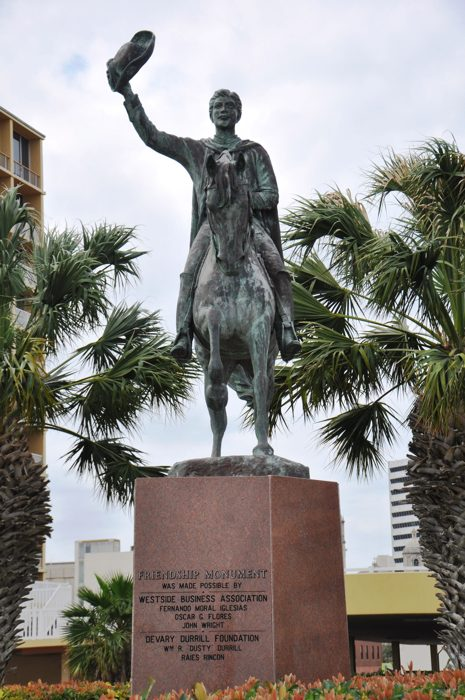

Blas de la Garza Falcón
| Blas de la Garza Falcón | |
|---|---|
 Retrato | |
| Nacimiento | h. 1591 Nueva Vizcaya |
| Fallecimiento | 20/21 de febrero de 1669 Monterrey |
| Padres | Marcos Alonso de la Garza y del Arcón Juana de Treviño |
| Cónyuge | Beatriz González Navarro / Hidalgo |
| Cargos | Justicia mayor y capitán a guerra |
| Estado de prueba | Matrimonio y cargo: PROBADO Fechas exactas: PROBABLE |
Blas de la Garza Falcón (h. 1591 – Monterrey, 20/21 de febrero de 1669) fue capitán y justicia mayor en el Nuevo Reino de León. Es el tronco común de las dos líneas (paterna García y materna Valdés-Gaona) que llegan a Francisco Javier García Gaona.
Biografía
Hijo de Marcos Alonso de la Garza y del Arcón (natural de Lepe) y de Juana de Treviño. Según la tradición genealógica nació hacia 1591 en Nueva Vizcaya; el lugar concreto (Real de Mapimí) permanece dato en investigación.
El 26 de abril de 1615, en la villa de Santiago del Saltillo, otorgó fianza sobre sus bienes por los dos mil pesos de dote que había recibido al casar con Beatriz González Navarro, hija de Marcos González y Mariana Navarro. El documento lo nombra vecino de la ciudad de Nuestra Señora de Monterrey. PROBADO (AMS, Presidencia Municipal, c. 1, e. 9, d. 63).
En 1646 actuaba como justicia mayor y capitán a guerra en el puesto de San Francisco (jurisdicción de Monterrey), ante quien se otorgó el testamento de su hermano Jusepe de Treviño. PROBADO.
Se tiene noticia de su partida de defunción en los libros parroquiales de Monterrey (1669). Mientras no se transcriba la imagen completa, la fecha se da como PROBABLE.
Documentos principales
- Fianza de dote, Saltillo, 26 de abril de 1615. AMS, PM, c. 1, e. 9, d. 63. PROBADO.
- Actuación como justicia mayor, 1646 (testamento de Jusepe de Treviño). PROBADO.
- Partida de defunción, Monterrey, 1669. PROBABLE (imagen pendiente de transcripción completa).
Descendencia
De su matrimonio con Beatriz González proceden, entre otros, el Sargento Mayor Juan de la Garza (casado con Margarita Rodríguez de Montemayor) y las dos líneas de este estudio: la paterna por Juana de la Garza González y la materna por una hija casada con Gregorio Fernández de Tijerina.